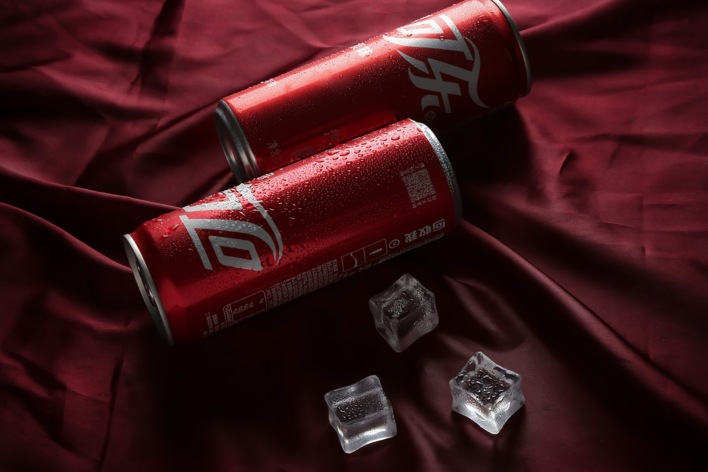
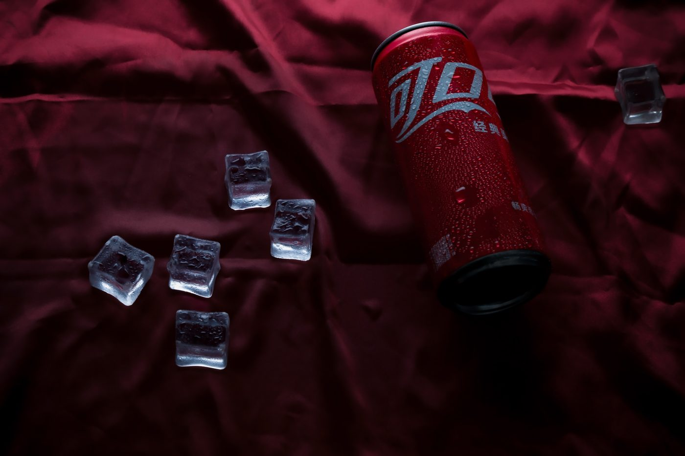
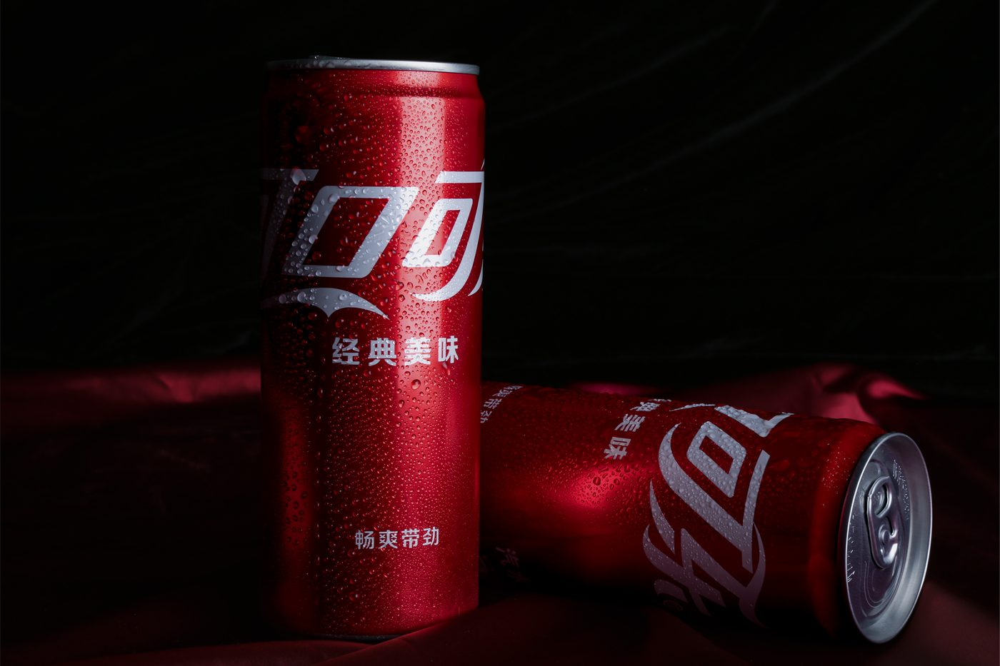
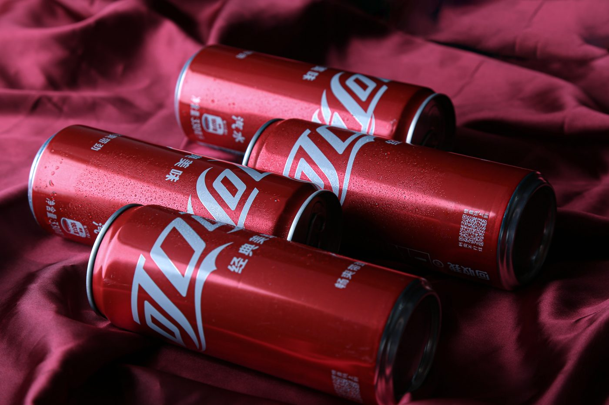
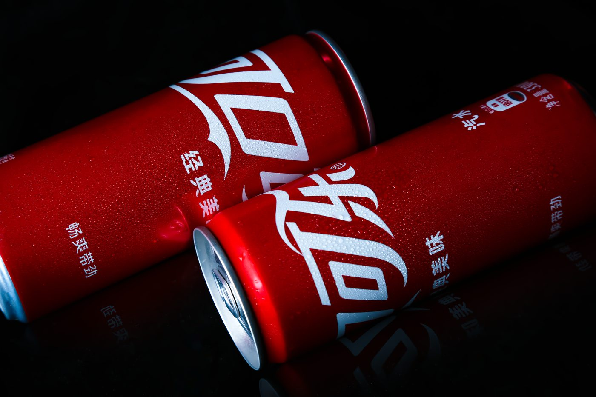
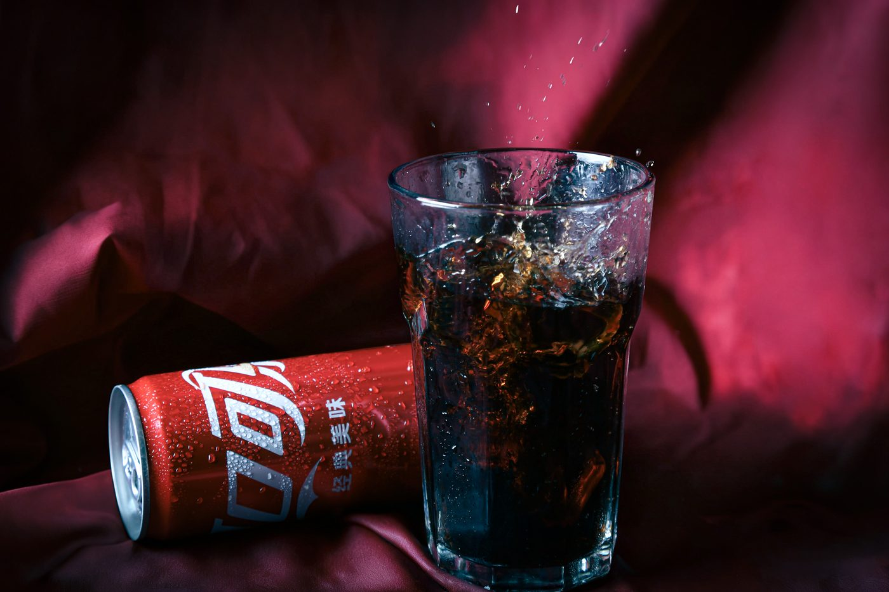
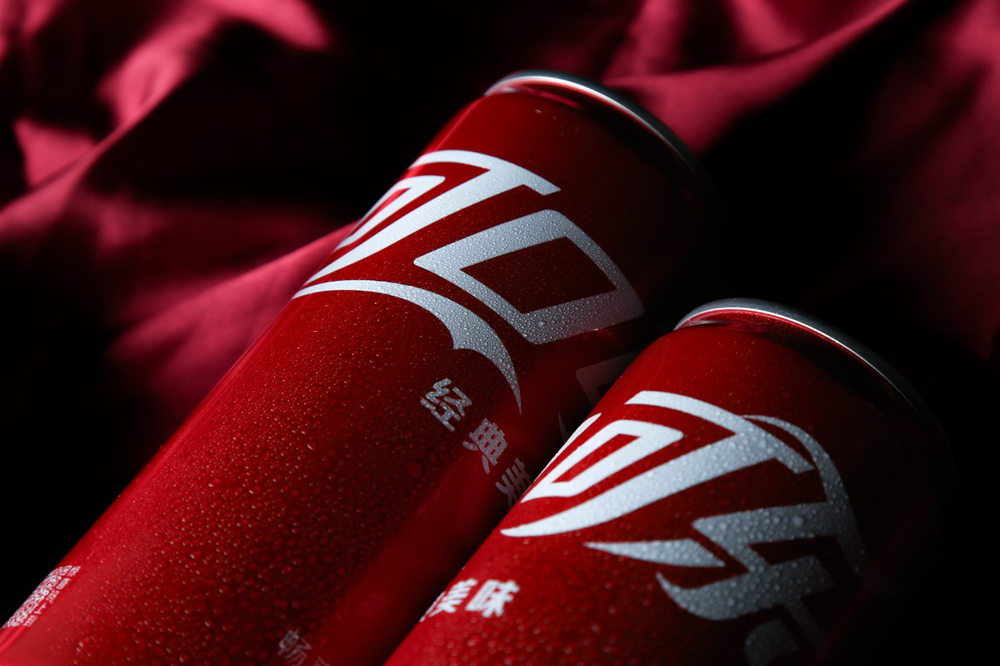

08 — 商业摄影Commercial Photography
商业摄影 Commercial Photography
一组产品商业摄影：以深红绸缎为背景，用冰块、水珠与玻璃杯建立质感对比，覆盖主图、场景图与细节图。 A set of commercial product photographs: deep crimson silk as ground, with ice, condensation and glass building material contrast — covering hero, scene and detail shots.

Year
2025
Role
摄影 / 后期Photography & Retouch
Client
课程课题 · 产品摄影
Scope
布光 · 构图与角度 · 道具与场景 · 后期修图Lighting · Composition · Props · Retouching
01 / 背景Context
把「好喝」翻译成看得见的质感Making taste visible
产品摄影要在极短的浏览时间里，把「好喝」这个味觉判断翻译成可以看见的质感——凝水、冰晶、金属反光与液体流动。 Product photography has to translate taste — a judgement you cannot see — into visible material qualities within a very short glance: condensation, ice crystal, metal reflection, the movement of liquid.
02 / 策略Strategy
冷暖材质反差Warm/cool material contrast
统一使用深红背景呼应产品本身的品牌色，用暖侧光勾出罐体的弧形高光；冰块与水珠的冷调则与背景形成材质反差，让画面有温度落差。 A deep crimson ground echoes the product's own brand colour, with warm side light tracing the arc of the can; the cool of ice and condensation contrasts against it, giving the frame a temperature drop.
03 / 执行Execution
控制角度与反射Controlling angle and reflection
控制布光角度与反光板位置，压住罐体的高光面积，避免金属曲面过曝；再分别拍摄单体、组合、散落与倒酒等不同叙事角度。 Lighting angle and reflector placement were tuned to hold back the highlight area on the can and avoid blowing out the curved metal surface; separate frames were then shot as single, grouped, scattered and pouring narratives.
04 / 成果Outcome
二十余张成片Twenty-plus frames
交付二十余张产品图，覆盖主图、场景图与细节图，可直接用于电商详情页与社交传播。 More than twenty product images delivered — hero, scene and detail — ready for e-commerce detail pages and social use.
品牌色彩Colour System
作品呈现Visuals






